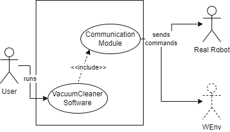

Introduction
Requirements
Requirement analysis
Use Case

User Story
Problem analysis
tt
em
bc
ks
kc
m
k
The requirements locate several
potential issues:
-
COMMUNICATION: according to VirtualRobot2021, provided by the customer, the robot can receive move commands in two different ways:
- by sending HTTP POST requests on port 8090;
- by sending messages on a websocket on port 8091.
Which one should we use? For simplicity, we initially choose to communicate synchronously, since we expect a response to each message sent to the robot (to check if a collision occurred). If in the future the customer will ask for an additional stop/resume mechanism, we would then be bound to use an asynchronous communication, since we will want to be able to stop the robot at any time.
-
PATH AND ALGORITHM: the choice of the path the robot must follow. For simplicity, for the moment we take for granted that there are no obstacles inside the room, except the 4 walls that surround it. Moreover, let's suppose that the robot starting position is fixed and well known, for example the upper-left corner, which we can call "den". In this way, the path choice becomes trivial, as it is possible to adopt a "zig-zag pattern": the robot moves forward until it encounters an obstacle (i.e. the wall), then rotates by 90° in order to face the area of the room yet to be explored (in our example that direction is the right). Then the robot should move by a step, and rotate again by 90° in the opposite direction. Then it can start moving forward again until it collides with a wall and so on.
In this regard, we can exploit the robot collision detection mechanism, to know when a wall has been collided with, and rotate the robot accordingly.
-
STATE: we must ensure that the robot doesn't leave blank spots. It is possible to dynamically build a data structure, such as a map, marking the spots where the robot has already passed. Assuming that the room can be represented in a Cartesian plane, we can think that each space is identifiable by 2 coordinates X and Y, and is equal to the dimensions of the robot (length and width). As the robot progresses, we insert a particular element in the map that indicates the status of the box, for example a different character wheter it has already been visited or is still to be visited. When the robot hits the first bottom wall, the we know the map row number.
Once the map is completed, we can simply check if each element of the map is filled with the "visited" character, to test the correctness of the solution.
-
DISTANZA: è necessario ricavare la distanza da percorrere per ciascun passo.
dopo che ha finito devo esser certo che non sia rimasto nulla da pulire
[...]
in previsione di un futuro meccanismo di stop/resume, manteniamo lo stato corrente del robot, creando una sorta di mappatura della stanza, con le aree già pulite, e quelle ancora da esplorare.
Problema: come mi assicuro che il robot pulisca tutto senza lasciare buchi? È necessario scegliere un pattern di movimento che garantisca questo vincolo, ad esempio muovendosi a
Supponendo che la stanza sia rappresentabile su un piano cartesiano, il robot potrebbe ad esempio muoversi avanti e indietro lungo l'asse X, avanzando lungo l'asse Y, di una distanza pari alla lunghezza del robot, ad ogni completamento della distanza di un lato
Problema: se ci sono ostacoli?
- come comunicare col robot -> facilmente risolvibile sfruttando il modulo fornito dal customer;
- come
- scelte tecnologiche
-
definire/chiarire le problematiche implicate dai requisiti.
fornire informazioni utili sui costi/tempi/risorse necessari.
fornire un quadro delle possibili soluzioni tecnologiche: + utili per il superamento delle problematiche
L’analisi del problema NON IMPLICA ancora alcuna progettazione, ma mira a fornire un quadro delle possibili soluzioni tecnologighe individuando quelle più utili per il superamento delle problematiche poste dai requisiti. La scelta finale sarà fatta dal progettista (che potrebbe anche ampliare lo spettro della indagine - ricordiamo che siamo in un processo iterativo a spirale ).
L’analisi del problema serve per capire quali sono le maggiori problematiche da affrontare, le tecnologie da usare e le risorse (umane e temporali) necessarie. Inoltre gettano le basi per impostare il primo sprint di sviluppo e quindi per costruire un primo ‘prototipo’ funzionante del sistema da estendere poi in modo incrementale con gli sprint succesivi dopo una opportuna sprint-review con il committente
risorse umane e temporali necessarie
Test plans
[...]
Project
Testing
Deployment
Maintenance